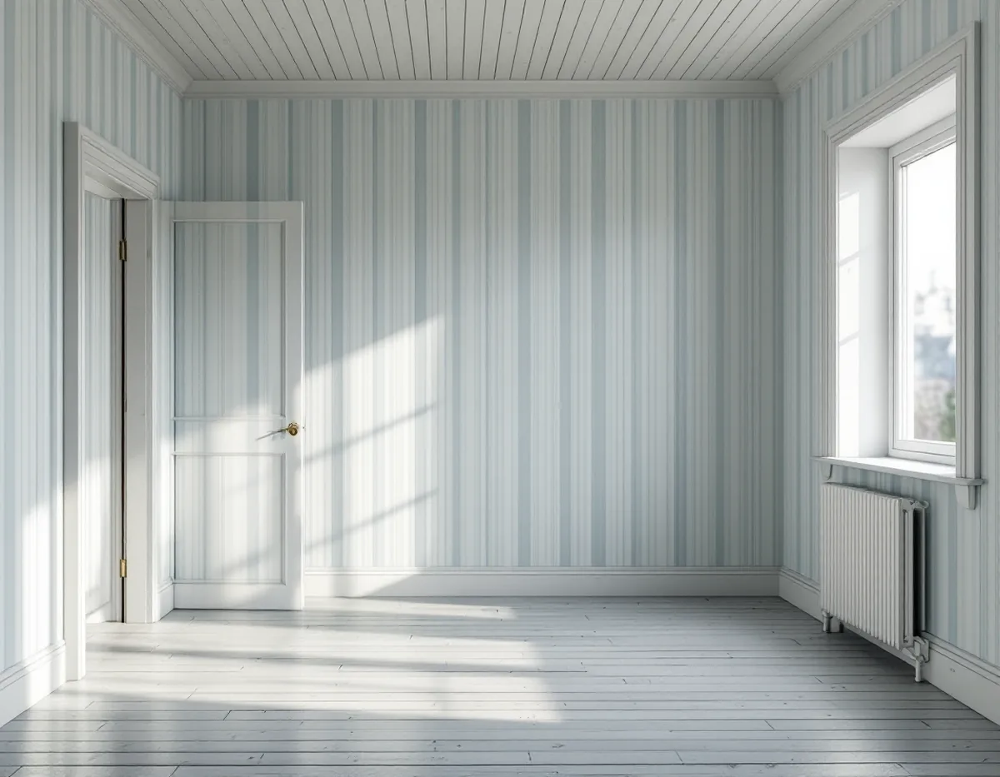
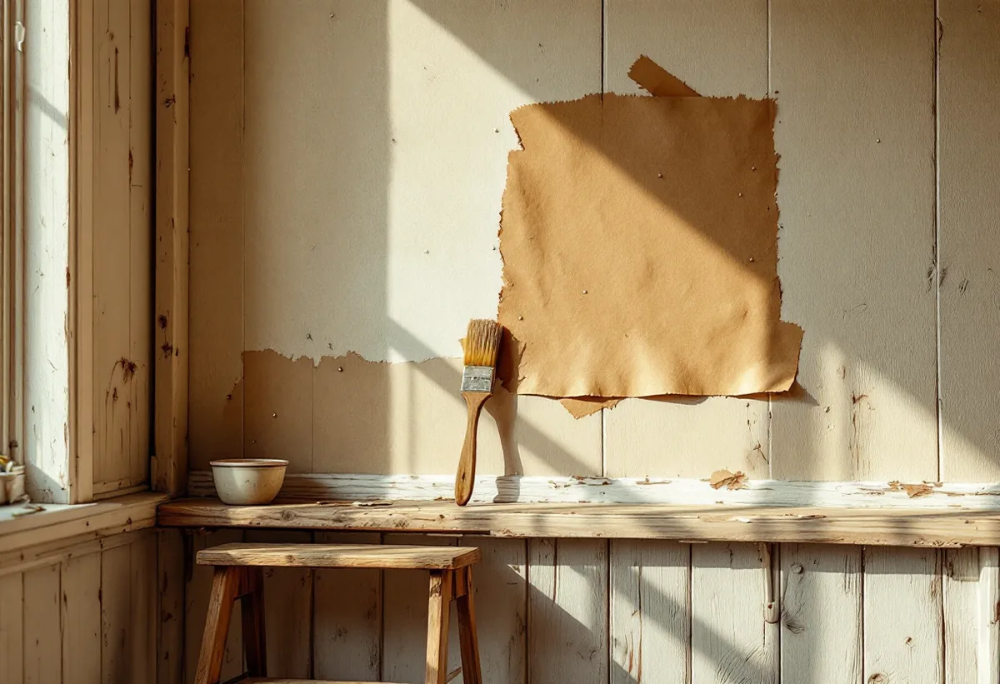

Platsbesök
Vi ser om väggen har spänd papp, panel, puts eller skivor och hur pappen mår.
I en äldre villa i Stuvsta, Snättringe eller Huddinge villastad kan tapeten sitta på papp i stället för på puts eller skivor. Papp ger en levande yta men får med tiden bubblor, revor och lagningar. Geal Entreprenad AB tapetserar i villor, radhus och bostadsrätter i Huddinge och lagar pappen först, så att den nya tapeten får ett jämnt underlag.

Huddinges kulturmiljöprogram beskriver hur Västra stambanan med en mellanstation i Huddinge öppnade för trafik 1860, och hur utflyttningen till Huddinge började vid sekelskiftet 1900. Egnahemsrörelsen kom igång på allvar efter 1909. Intill Huddinge och Stuvsta stationer växte Huddinge villastad och Stuvsta egnahemsområde fram, och under 1920-talet började även Segeltorp och Snättringe styckas för villor.
Områdena fick egna municipalsamhällen: Hörningsnäs 1915, Huddinge, Fullersta, Stuvsta och Segeltorp 1924 och Snättringe 1929. År 1947 slogs flera av dem samman till ett stormunicipal. Programmet beskriver egnahemsområdenas villor från 1910- till 1940-talet med drag av jugend och nationalromantik, senare nyklassicism och tidig funkis, och med träpanel som ett tongivande material. Under 1940-talet fortsatte egnahemsbygget med kataloghus i form av enkla träbyggnader med flacka sadeltak.

I Svenska Byggnadsvårdsföreningens frågespalt citerar en frågeställare en bok om svensk villaarkitektur: fram till och med 1920-talet pappkläddes och tapetserades insidan av väggarna, antingen genom att papp spändes mellan spännlister i golv, tak och hörn eller genom att pappen klistrades direkt mot underpanelen. Föreningen svarade att en nybyggd vägg av brädgårdsvirke troligen rör sig för mycket för att klistras, och att det för ett snyggt och varaktigt resultat är bäst att följa det klassiska tillvägagångssättet.
Föreningen förklarar också orden. Makulatur är ett samlingsnamn för restpapper, allt från tidningspapper och förpackningspapper till spännpapp. Spännpapp är ett traditionellt underlag för tapeter som blev vanligt under 1800-talet, och det ger en mer levande yta än gips eller moderna skivor. På panel fungerar det utmärkt.
Spänd papp sitter mellan spännlister i golv, tak och hörn, så där tittar vi först i en villa i Huddinge. Vi ser efter innan vi föreslår något.
Är spännpappen bubblig rekommenderar föreningen att bubblorna skärs upp och spikas in med pappspik, och att man sedan makulerar över med torra och våta remsor. Frågan gällde just ett rum med bubblig spännpapp som skulle tapetseras.
En reva kräver lite mer. I ett svar om ett spännpappstak målat med limfärg beskriver föreningen hur limfärgen först tvättas bort vid revan, hur pappen fästs på båda sidor om skarven med häftklammer och nubb, ibland med en spikremsa som förstärkning, och hur den avtvättade pappen grundas med en mager oljegrund som får torka. Därefter klistras en pappremsa som täcker hela lagningen: först en tunnare, blöt papp över skarven med nubben och klamrarna, sedan en klisterremsa över alltihop. Det viktiga är att klistret hamnar på den oljegrundade ytan. Fuktrosor behandlas med oljegrund eller schellack.
Har en tidigare lagning lämnat synliga spikar och revor i en tapetserad pappvägg ska man enligt föreningen först testa om den gamla tapeten är en limfärgstapet: löser mönstret upp sig av vatten? I så fall målas det runt lagningen med oljegrund, och sedan klistras en klisterremsa över spiklagningen med en torr remsa emellan innan väggen tapetseras.
Vi låter lagningarna torka fast innan tapeten sätts upp. Därför delar vi arbetet i två steg och planerar dagarna efter det, så att du vet när rummet går att använda igen. Ska huset även målas utvändigt finns mer under målare i Huddinge.
Vi ser om väggen har spänd papp, panel, puts eller skivor och hur pappen mår.
Vi prövar om den gamla tapeten är tryckt med limfärg innan vi väljer metod.
Lagning av pappen och tapetseringen står som egna poster.
Bubblor och revor spikas in, grundas och täcks med remsor.
När lagningarna har torkat sätts tapeten upp våd för våd.
Vi går igenom väggarna med dig och lämnar överbliven tapet.
Tapetsering är rotarbete enligt Skatteverket, i småhus i bostaden som köparen äger och i bostadsrätt innanför tak, väggar och golv.
Företaget får dra av högst 30 procent av arbetskostnaden. Rotavdraget kan bli högst 50 000 kr per person och år, och högst 75 000 kr om rutavdrag räknas in. Tapet, papp, klister och resor ger inget avdrag. Geal drar avdraget direkt på fakturan.
Hur mycket av pappen som behöver lagas, om gamla lager ska ner och hur stort rummet är väger tyngst. Efter ett gratis platsbesök får du ett skriftligt kostnadsförslag.
Fasad, fönster och invändig målning.
Målare i Stockholm →Takbyte, takbesiktning och plåtarbeten.
Takläggare i Huddinge →Stuvsta, Snättringe och Skogås.
Takrenovering i Huddinge →Avlopp, egen brunn och ritningar.
Attefallshus i Huddinge →Grannar, tomtgräns och lovärendet.
Byggföretag i Huddinge →Nytt trä i en gammal fasad.
Fasadmålning i Huddinge →Egnahem, grupphus och 70-talsvillor.
Fönsterbyte i Huddinge →Okopplade bågar, tätning och lagning av bottenstycken.
Fönsterrenovering i Huddinge →Slipa golvet och byt ytbehandling.
Golvslipning i Huddinge →Grupphus, egnahem och stugor.
Köksrenovering i Huddinge →Rännor, dagvatten och brutna tak.
Plåtslagare i Huddinge →Tyngre tak, stugor och landsbygd.
Takbyte i Huddinge →Egnahem, grupphus och permanentade stugor.
Badrumsrenovering i Huddinge →Villor, grupphus och fritidshus i Huddinge.
Fasadrenovering i Huddinge →Grupphus, radhus och kedjehus i Huddinge.
Golvläggare i Huddinge →Fasad, fönster och rum i Huddinge.
Målare i Huddinge →Altaner, förråd och gäststugor.
Snickare i Huddinge →Råd för tre epoker av småhus.
Tillbyggnad i Huddinge →Rekordårens hus inifrån och ut.
Totalrenovering i Huddinge →